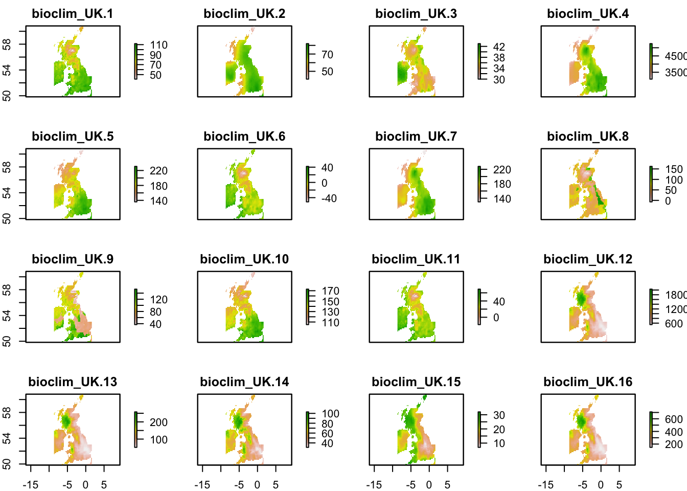

Species Distribution Modelling
# Load libraries
library(tidyverse)
library(rgbif)
library(lubridate)
library(skimr)
library(caret)
library(raster)
# Clear environment and set working directory
rm(list = ls())
options(stringsAsFactors = FALSE)Use the Global Biodiversity Information Facility (GBIF) to gather presence records for the migratory hoverfly Volucella zonaria, also known as the hornet mimic hoverfly. In Great Britain, it was only known from two specimens prior to 1940, so was regarded as rare. Since then, it has become increasingly widespread in many parts of the South and South East England, often in association with parks and gardens, where adults are usually seen visiting flowers. Elsewhere in England, only a few scattered records exist.
# get the database id ("key") for the hornet mimic
gbif_response <- read_rds("~/Documents/GitHub/ComputationalEcology/data_analysis_files/clim_data/gbif_volucella_zonaria.rds")
# Create presence records across decades
zonaria_clean <- gbif_response$data %>%
# get decade of record from eventDate
mutate(decade = eventDate %>%
ymd_hms() %>%
round_date("10y") %>%
year() %>%
as.numeric()) %>%
# clean data using metadata filters
filter(
# only records with no issues
issues == "" &
# let's take data from 2000 to 2020
decade %in% c(2010,2020)) %>%
# retain only relevant variables
dplyr::select(decimalLongitude, decimalLatitude, decade) %>% arrange(decade)Now we need to grab some environmental data. For this vignette we will use the worldclim database as this is directly available via the raster package. We can download 19 bioclimatic variables at 10’ resolution. They are coded as follows:
- BIO1 = Annual Mean Temperature
- BIO2 = Mean Diurnal Range (Mean of monthly (max temp - min temp))
- BIO3 = Isothermality (BIO2/BIO7) (* 100)
- BIO4 = Temperature Seasonality (standard deviation *100)
- BIO5 = Max Temperature of Warmest Month
- BIO6 = Min Temperature of Coldest Month
- BIO7 = Temperature Annual Range (BIO5-BIO6)
- BIO8 = Mean Temperature of Wettest Quarter
- BIO9 = Mean Temperature of Driest Quarter
- BIO10 = Mean Temperature of Warmest Quarter
- BIO11 = Mean Temperature of Coldest Quarter
- BIO12 = Annual Precipitation
- BIO13 = Precipitation of Wettest Month
- BIO14 = Precipitation of Driest Month
- BIO15 = Precipitation Seasonality (Coefficient of Variation)
- BIO16 = Precipitation of Wettest Quarter
- BIO17 = Precipitation of Driest Quarter
- BIO18 = Precipitation of Warmest Quarter
- BIO19 = Precipitation of Coldest Quarter
# Load the bioclim covariates for the UK
bioclim_uk <- raster::stack("~/Documents/GitHub/ComputationalEcology/data_analysis_files/clim_data/bioclim_UK.tif/")
# Generate coordinates to extract raster data from zonaria obs
df_coords <- zonaria_clean[1:2]
# combine climate and hoverfly data
df_presence <-
# Extract bioclim variables using long/lat
raster::extract(bioclim_uk, df_coords) %>%
# Add extracted bioclim variables to observation data
cbind(zonaria_clean) %>%
# Mark observation data as presence records
mutate(presence = 1) %>%
# We dont need decade anymore
dplyr::select(-decade)
# Function to pick raster cells at random from bioclim layers
raster_random_sample <- function(bio_data, n_samples) {
raster::sampleRandom(
x = bio_data,
size = n_samples,
na.rm = TRUE,
xy = TRUE)
}
# Sample background points (psedo absent?)
df_absence <- raster_random_sample(bioclim_uk, 500) %>%
as.data.frame() %>%
# Mark as background data
mutate(presence = 0) %>%
rename(decimalLongitude = x,
decimalLatitude = y)
# Create single dataframe for all data
df_zonaria <- rbind(df_presence,df_absence)We can plot the bioclim data - all 19 covariates:
# Plot the bioclim covariates
plot(bioclim_uk)
Now we have joined our environmental and observation data together, we can begin to build a species distribution model. First we need to create a categorical response variable as we want to model presence v absence in space:
# last pre-processing step
df_modelling <- df_zonaria %>%
# caret requires a factorial response variable for classification
mutate(presence = case_when(
presence == 1 ~ "presence",
presence == 0 ~ "absence") %>%
as.factor()) %>%
# drop all observations with NA variables
na.omit()Then we partition the available data - one set for training the other for testing:
# Create an index to randomly partion presence and absence observations
inTrain <- createDataPartition(y = df_modelling$presence, p = 0.7, list = FALSE)
df_train <- df_modelling[ inTrain,]
df_test <- df_modelling[-inTrain,]We will try and fit a model using a regularised random forest:
library(RRF)
# for reproducibility
set.seed(12345)
# set up model fitting parameters
# tuning grid, trying every possible combination
tuneGrid <- expand.grid(
mtry = c(3, 6, 9),
coefReg = c(.01, .03, .1, .3, .7, 1),
coefImp = c(.0, .1, .3, .6, 1))
tuneControl <- trainControl(
method = 'repeatedcv',
classProbs = TRUE,
number = 2,
#repeats = 2,
verboseIter = F,
summaryFunction = twoClassSummary)
# actual model build
model_fit <- train(
presence ~ .,
data = df_train,
method = "RRF",
metric = "ROC",
tuneGrid = tuneGrid,
trControl = tuneControl)
plot(model_fit)
Now we can evaluate the performance of the trained model. To do this we can use the Area under the Receiver Operator Characterisitc curve (AUC). Under the AUC a random model would score 0.5, and a perfect model 1.0.
# combine prediction with validation set
df_eval <- data_frame(
"obs" = df_test$presence,
"pred" = predict(
object = model_fit,
newdata = df_test,
type = "prob") %>%
pull(1))
# get ROC value
library(yardstick)
roc_auc_vec(estimator = "binary", truth = df_eval$obs, estimate = df_eval$pred)## [1] 0.9659624Now we can make a prediction and plot the UK species distribution for V. zonaria.